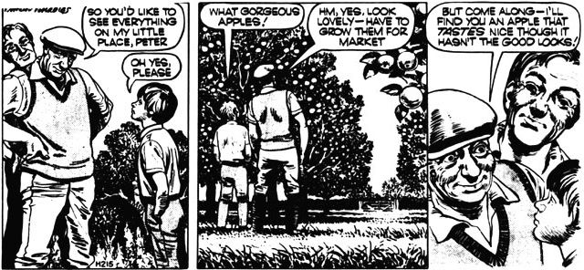
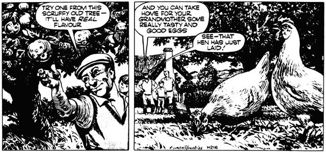

MAN-MADE ROT IS EATING AT THE HEART OF NATURE. WE ARE DESPOILING THE HERITAGE OF OUR SONS, OUR GRANDSONS, AND THEIR GRANDSONS.
And now-direct from England-the world's most conscientious ecology cartoon feature. A lit tie overstated for our American tastes, perhaps, but full of real meat, nonetheless. Ah, if we only had a cartoon series like this on our side of the pond! But, since we don't MOTHER presents Mr. Crabtree Crusades!
Ted has a bit of most things on his smallholding-fruits, vegetables, poultry, a few pigs. He has to produce what the market demands and his apples must look perfect. They must have no blemishes and each one must be like the next, untouched by insects, unmarked by anything that comes in the ordinary course of nature. That can only be achieved by keeping nature out with various sprays, some of which are poisonous. The result is the apples look like plastic models-and they do not taste very different. The skins are usually tough too. Ted would not eat them himself-he grows them because he must make a living, although he does think it a pity that it is just the look of an apple that sells it to today's consumer.
The apple that Ted picks for Peter is not a model of perfection. Nature has had its way with it and has put on it the marks that come from attacks of insects and other things-but has also put into it the sweet taste that apples should have. The tree it comes from is old and gnarled, and is part of the garden that Ted keeps so that he and his family can have food they can enjoy. "Anyway," Ted says, "the insects wouldn't go for those market apples. They like something with a bit of taste too." Ted has hens running under the fruit trees. "None of your battery eggs for us," he says, "we like good natural eggs too." That works out two ways-they have their free-range eggs, and the hens' droppings keep the trees fertilized.
|
 |
 |
|